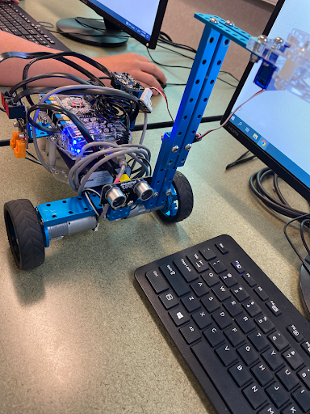

Pacman scratch game

This is my scratch project and the goal was to make a game of pacman with the roles reversed so the ghost is the player. I accomplished this by using variables to track the score and editing a pacman sprite to fit into the game. The hard part was the ghosts being weird and bugging through walls sometimes.I learned how to stop the sprite from going in a certain direction.
snap drawing

This is my snap project and the goal here was to make this spiral type thing with one script using things like variables. I accomplished this by using the for block and a variable. The challenge was getting the for block to work and this project taught me how to better use the for block.
snap drawing
This is one of the projects me and Alex worked on last year and the goal was to make a fully autonomous robot. We accomplished it by coding the robot to move forwards until its sensor got too close to something in which case the robot would back up. The challenge was getting it to move straight because one of the motors was running slower than the other one so we had to compensate by changing the code. I learned how to code a fully autonomous robot.